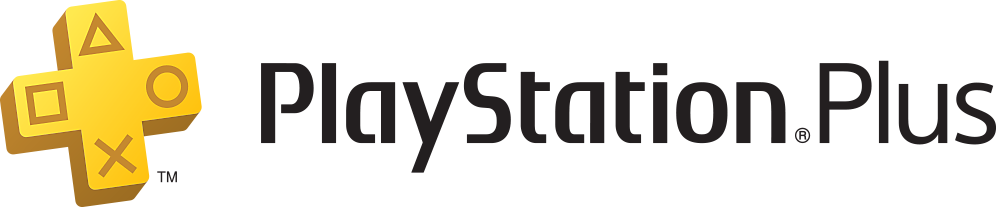
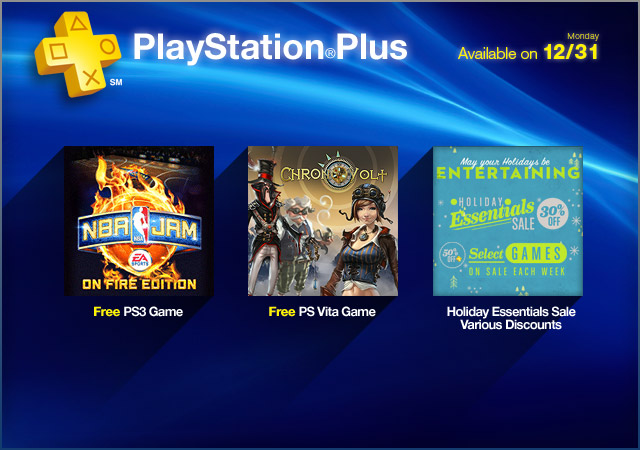
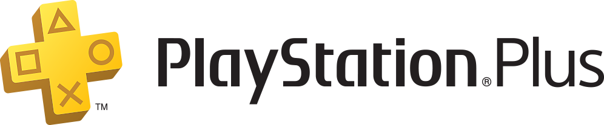
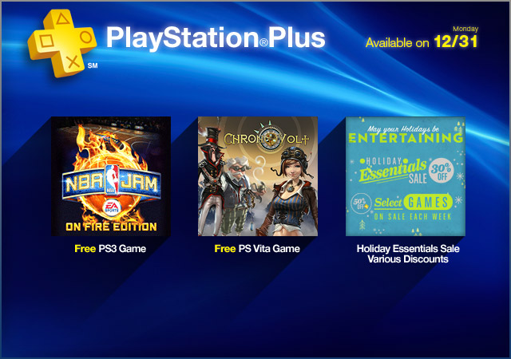
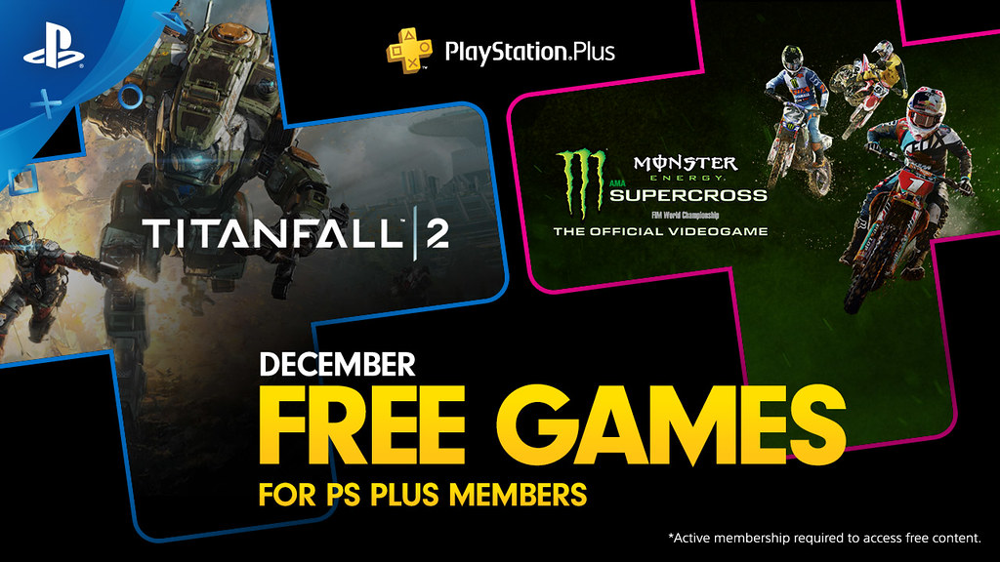
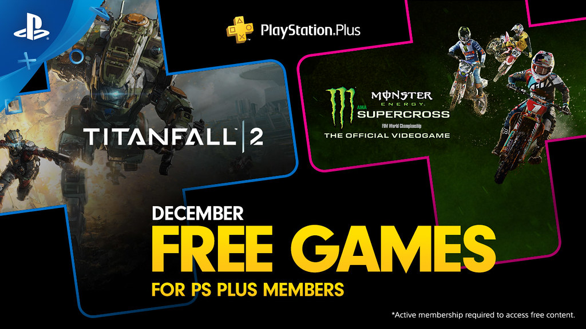

PS-Plus
- Tout ce qu'il faut savoir sur PS-Plus:
Definition

PlayStation Plus est un service par abonnement qui ameliore votre compte gratuit existant pour le PlayStation Network et
vous permet de profiter au maximum de votre systeme PS4. PlayStation Plus est disponible à l'achat dans tous les
pays ou le PlayStation Store est propose.PlayStation Plus est la seule façon d'acceder au multijoueur en ligne sur PS4. De plus,
l'abonnement PlayStation Plus inclut des jeux PS4 à telecharger chaque mois, des remises exclusives sur le PlayStation Store
et 100 Go de stockage sur cloud pour vos sauvegardes. En vous abonnant à PlayStation Plus, vous pourrez acceder à
tous les avantages des systemes PS4 sur lesquels vous vous connecterez. De plus, les autres utilisateurs qui se
connecteront au PSN pour jouer à des jeux sur votre console PS4 principale auront accès au multijoueur en ligne pour
ces memes jeux.
comment jouer sur PS-Plus

Vous pouvez annuler votre abonnement en cours jusqu'à 24 heures avant la date d'echeance.
Si l'annulation de l'abonnement intervient moins de 24 heures avant son echeance, la periode d'abonnement suivante vous sera
facturee. Vous profiterez alors du service d'abonnement jusqu'a la prochaine echeance de paiement.
Le PlayStation Store sur PC

PlayStation Plus est un service par abonnement qui ameliore votre compte gratuit existant pour le PlayStation Network et
vous permet de profiter au maximum de votre systeme PS4. PlayStation Plus est disponible à l'achat dans tous les
pays ou le PlayStation Store est propose.PlayStation Plus est la seule façon d'acceder au multijoueur en ligne sur PS4. De plus,
l'abonnement PlayStation Plus inclut des jeux PS4 à telecharger chaque mois, des remises exclusives sur le PlayStation Store
et 100 Go de stockage sur cloud pour vos sauvegardes. En vous abonnant à PlayStation Plus, vous pourrez acceder à
tous les avantages des systemes PS4 sur lesquels vous vous connecterez. De plus, les autres utilisateurs qui se
connecteront au PSN pour jouer à des jeux sur votre console PS4 principale auront accès au multijoueur en ligne pour
ces memes jeux.
comment jouer sur PS-Plus

Vous pouvez annuler votre abonnement en cours jusqu'à 24 heures avant la date d'echeance.
Si l'annulation de l'abonnement intervient moins de 24 heures avant son echeance, la periode d'abonnement suivante vous sera
facturee. Vous profiterez alors du service d'abonnement jusqu'a la prochaine echeance de paiement.
Le PlayStation Store sur PC
- Connectez-vous a votre compte Sony Entertainment Network.
- Allez a l'onglet Gestion des abonnements sous votre ID
utilisateur.
- Selectionnez l'abonnement actuel et cliquez sur Annuler
le renouvellement automatique.
le renouvellement automatique.
- Si vous changez d'avis, utilisez la même méthode pour choisir
l'option Activer le renouvellement automatique avant la date
d'expiration de la periode d'abonnement en cours.
l'option Activer le renouvellement automatique avant la date
d'expiration de la periode d'abonnement en cours.
- Selectionnez votre compte d'utilisateur local et appuyez
en haut sur le pave de commande pour acceder au menu Fonction,
allez dans [Paramètres] > [PlayStation Network] >
[Informations du compte] > [Liste de services], puis appuyez
sur [touche X] pour afficher l'intégralite des services accessibles.
en haut sur le pave de commande pour acceder au menu Fonction,
allez dans [Paramètres] > [PlayStation Network] >
[Informations du compte] > [Liste de services], puis appuyez
sur [touche X] pour afficher l'intégralite des services accessibles.
- Selectionnez l'abonnement en cours et appuyez sur [touche X].
- Selectionnez Annuler le renouvellement automatique et appuyez
sur [touche X].
- Si vous changez d'avis, utilisez la meme methode pour choisir
l'option Redemarrez le renouvellement automatique avant la date
time d'expiration de la periode d'abonnement en cours.
Par telephone ou e-mail
Si vous preferez, vous pouvez résilier votre abonnement en contactant notre assistanc
les differents jeux sur PS-Plus

ATTENTION! Les jeux sont momentanes, en voila quelques uns:
-Bloodborne
-Days Gone
-Detroit: Become Human
-God of War
-Infamous Second Son
-Ratchet and Clank
-The Last Guardian
-The Last of Us Remastered
-Until Dawn
-Uncharted 4: A Thief’s End
-Batman: Arkham Knight
-Battlefield 1
-Call of Duty: Black Ops III – Zombies Chronicles Edition
-Crash Bandicoot N. Sane Trilogy
-Fallout 4
-Final Fantasy XV Royal Edition
-Monster Hunter: World
-Mortal Kombat X
-Persona 5
-Resident Evil 7 biohazard
l'option Redemarrez le renouvellement automatique avant la date
time d'expiration de la periode d'abonnement en cours.
Par telephone ou e-mail
Si vous preferez, vous pouvez résilier votre abonnement en contactant notre assistanc
les differents jeux sur PS-Plus

ATTENTION! Les jeux sont momentanes, en voila quelques uns:
-Bloodborne
-Days Gone
-Detroit: Become Human
-God of War
-Infamous Second Son
-Ratchet and Clank
-The Last Guardian
-The Last of Us Remastered
-Until Dawn
-Uncharted 4: A Thief’s End
-Batman: Arkham Knight
-Battlefield 1
-Call of Duty: Black Ops III – Zombies Chronicles Edition
-Crash Bandicoot N. Sane Trilogy
-Fallout 4
-Final Fantasy XV Royal Edition
-Monster Hunter: World
-Mortal Kombat X
-Persona 5
-Resident Evil 7 biohazard